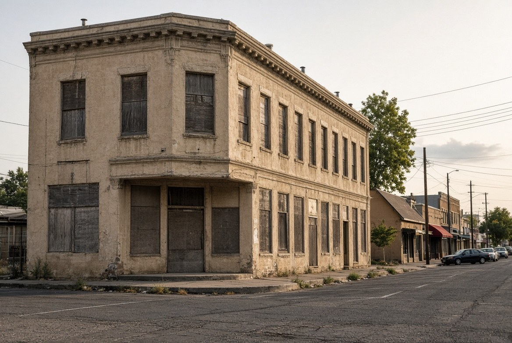
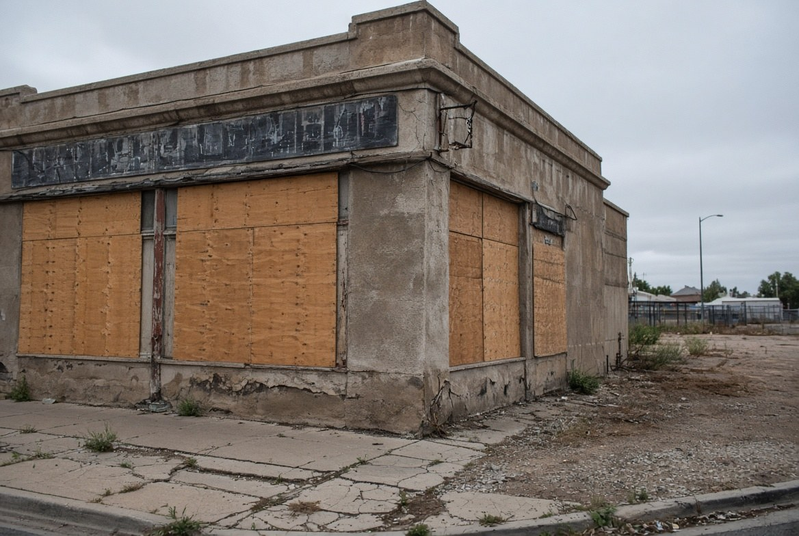

Address
855 E Fern Ave
Corner of Fern and Maroa. ZIP 93728. Next to Strummer's. Former Cafe Midi and Archer's Music.
Pilot result
One $1,000 fine
Issued after the 2 January 2026 inspection. Paid 20 February 2026. PRA through early June showed that as the only documented citation under the pilot.
The council fact
Morro Bay, not Santa Cruz
Zara Landrum, family member of the owners, sits on the Morro Bay City Council. She lives outside Fresno.

Tomorrow night at Summer Fox, 1426 N Van Ness, Steve Wilburn and Jeremy Hofer are hosting Vibrant Not Vacant. The event graphic is a painted cafe on a dead wall. The question in the room will be how to make vacant Tower storefronts live again.
Read this first. The corner they are talking about already had a year of Fresno City Council effort pointed at it. The city did not fail to notice 855 E Fern. The city wrote a pilot, sent inspectors, emailed the owners about a dangling electrical panel, issued one thousand-dollar citation, took the payment, flipped the file from violation to compliance and back to violation, and still did not put a tenant in the building.
That is not a theory from a comment thread. That is Julianna Morano's 23 July 2026 Fresnoland reconstruction of the code-enforcement file, plus the Bee's 11 August 2026 account of Wilburn's own Public Records Act request.
Correct the city first
The line that travels on the street is that the owner of the boarded shop at Fern and Maroa sits on the Santa Cruz City Council. That is the wrong coastal city.
Fresnoland named Zara Landrum as a member of the family that owns the property. She lives outside the Fresno area. She serves on the Morro Bay City Council in San Luis Obispo County. The City of Morro Bay lists her as a sitting council member. She filed as an incumbent for the 3 November 2026 Morro Bay election under the ballot name Robin "Zara" Landrum.
Santa Cruz and Morro Bay are both California coast. They are not the same government. If you walk into Summer Fox repeating Santa Cruz, you will spend the first ten minutes defending a fact that is already wrong. Use Morro Bay.
What the building is
855 E Fern is the Cafe Midi building. Mort Bennett ran a French-style cafe there in the 1960s. He closed it in the early 1970s and left for Berkeley. Another bay later held Archer's Music until the late 1990s. A 2001 attempt to reopen the space as Tower District Dive never opened. GV Wire, the Bee, and Fresnoland have all treated the corner as vacant for decades. It sits on an otherwise working stretch that includes Livingstone's and Strummer's.
Wilburn wanted the building for Tower Food Works, a nonprofit commercial kitchen. He told the Bee he spent about $6,000 of his own money and even filled inspection logs for absentee owners who do not live nearby. The space did not come online.

What Fresno already tried
In June 2025 the Fresno City Council adopted a Vacant Commercial Building pilot for the Tower District. Councilmember Annalisa Perea carried it. Some reports list Miguel Arias as a co-sponsor. The box was roughly Blackstone to Palm or Fruit, Belmont to McKinley. Commercial buildings only. Boarded properties were supposed to be made ready for occupancy within 120 days. Fines started at $250 and could climb toward $10,000. Owners could stay in a kind of compliance if they were "diligently" pulling permits, trying to sell, or otherwise not an abandoned nuisance. That last clause is the hole.
Wilburn's PRA, as reported by Fresnoland and the Bee, showed about 50 to 60 properties touched by the registry logic, a much smaller set actually inside the pilot, and one documented citation as of 5 June 2026. That citation was this building. $1,000. January. Paid 20 February.
The file under the fine was not "you have been empty since Nixon." It was a damaged electrical panel that code inspector Joe Garcia described in September 2025 as literally dangling and held in place by wires, plus weeds, dumping, and people breaking in. After the fine the exterior improved. 6 April 2026: marked in compliance. 30 April 2026: back in violation after a PG&E notice and the same panel and detached pipes. Interior, per Wilburn, stayed dead.
Perea told Fresnoland the pilot did push owners to board and cut weeds, and that reactivation was the goal that had not arrived. Assistant City Attorney Christina Roberson told a committee that receivership is a high bar because it is close to taking the property through a court-appointed third party without writing a check. That is why "just take it" is not the Tuesday-night solution.
What the owner said on the record
Landrum told Fresnoland the family would like the building rented. She said they were trying to get a contractor in. She also said contractors will not leave tools in a building where people climb the roof. She floated a paid parking lot because people already feel unsafe parking at night in an entertainment block. She said city failure to hold the line on the street lowered the value of the asset they would otherwise rent or sell.
That is the absentee-owner argument in one paragraph. The building is in 93728. The council calendar is in Morro Bay. The risk on site is treated as a reason not to rehab, which then keeps the risk on site. The pilot punished the paperwork more than the vacancy.
Wilburn's line, also on the record: the goal as practiced was not rehabilitation. The goal as practiced was avoiding fines by cutting weeds and boarding doors.
The other diagnosis
Vibrant Not Vacant is a land-use campaign. Measure success by reactivation, not by secured doors. That is a real demand. It is also not the whole problem on that corner.
The High Tower record on 19 August 2026 is pc-aug19. The loaded label is homeless. The statute that does not get written is the misdemeanor. A city that will not ticket canal litter will not clear a roof. Break-ins at 855 E Fern are not a vacancy-management footnote. They are the criminal piece that makes contractors refuse the job and makes a $1,000 fine look like a receipt instead of a remedy.
If tomorrow night treats Fern and Maroa as a design and ordinance puzzle that just needs more neighbor energy, the room will spend another year discovering what the last year already measured. The ordinance was not unused. It was used once, on the exact building, and the building is still dead.
What to carry into Summer Fox
- The address is 855 E Fern, Cafe Midi, Fern and Maroa.
- The council seat attached to the ownership family is Morro Bay, not Santa Cruz.
- The Tower vacant-building pilot is already on the books. One documented fine after a year. This building took it and paid it.
- Boards and weeds are not reactivation. Receivership is a high legal bar, not a Tuesday motion.
- The street condition that keeps contractors out is a criminal-enforcement problem. That record is on the August 19 tape, not on a new neighbor policy.
Sources
- Julianna Morano, Fresnoland, 23 July 2026. "What one particularly stubborn vacancy in the Tower District tells Fresno about one of the city's biggest economic challenges." One $1,000 citation, payment date, inspection log, Landrum as Morro Bay council member and family owner, Wilburn, Perea, Roberson.
- Fresno Bee, 11 August 2026. "Neighbors demand stronger vacant building rules in Fresno." Vibrant Not Vacant launch. Cafe Midi named as the cited building. Wilburn PRA counts.
- GV Wire, 29 July 2025. "Fresno's Vacant Property Ordinance Punishes the Wrong People: Rassamni." 855 E Fern named as vacant for decades, next to Strummer's.
- Fresno Bee, 24 July 2025. "Why are these buildings in Fresno's Tower District still empty?" Cafe Midi / Archer's Music history at Fern and Maroa.
- Bethany Clough, Fresno Bee, 3 June 2022. Cafe Midi history. Mort Bennett. Closed early 1970s.
- City of Morro Bay, Mayor and City Council roster. Zara Landrum listed as council member. 2026 election filings under Robin "Zara" Landrum, incumbent.
- ABC30 / YourCentralValley / GV Wire coverage of the June 2025 Tower vacant-building pilot. Perea. 120-day clock. Fine range.
- City of Fresno Code Enforcement pages on the Blighted Vacant Building Ordinance and vacant-building registry.
- High Tower District, pc-aug19, 19 August 2026 Planning Commission comment at 1:49:12. Loaded label. Unused misdemeanors. Whistleblow or go down.
- Facebook event. Vibrant Not Vacant // Neighbor policy meetup. 29 September 2026, 6 p.m. Summer Fox Tower, 1426 N Van Ness Ave. Hosts Steve Wilburn and Jeremy Hofer.
Close
Due diligence is not a vibe. The corner already had a year. The fine already landed. The owner already sits on another city's council. The diagnosis that the room will try to skip is the one on the August 19 tape. Take that into Summer Fox or spend tomorrow night inventing a solution the last ordinance already failed to buy.